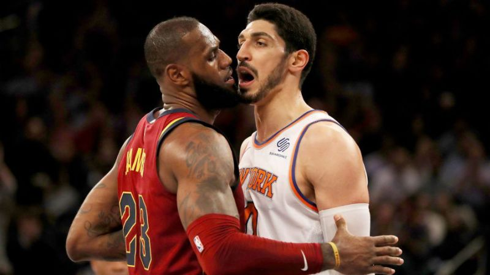
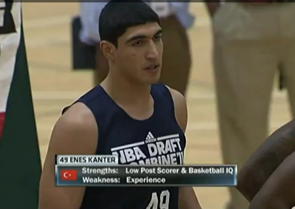
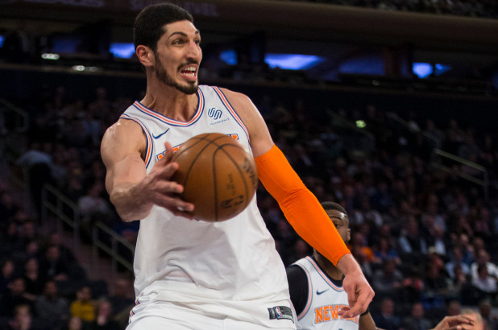
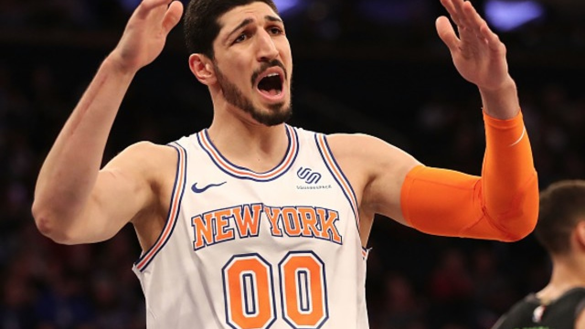
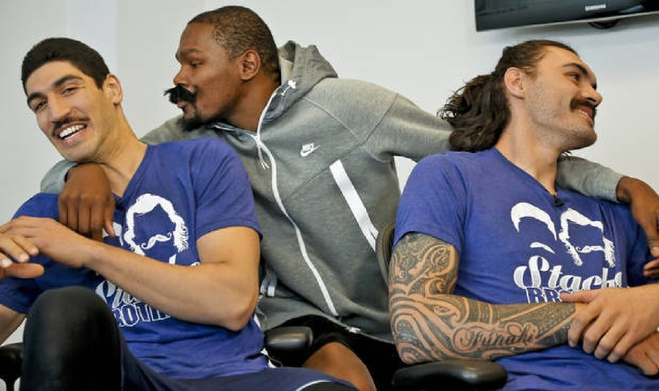

NBA Player and Turkish Activist
Kevin Durant and Enes Kanter were friends when they were both in OKC and they pushed each other to become better as players and as individuals
See Profile
Jerry West as the NBA logo helped inspire Enes Kanter to gain passion and love for basketball which led him to the NBA giving him a platform to speak out against the tyranny in Turkey
See ProfileThe way the Turkish president governs the country made Enes Kanter speak out and give light to the dictatorship and problems Turkey was facing
See ProfileEnes Kanter became famous as an NBA Center playing for the the Utah Jazz, Oklahoma City Thunder, New York Knicks, and currently the Portland Trail Blazers.Kanter is from Turkey and he used his NBA platform to speak out against the Turkish government and president calling Erdogan the present day Hitler, stating that if you speak out against the president or the government you are seen as a terrorist. Kanter wants to bring light to this situation to better the country and the safety of the citizens.
More Info More Info More Info